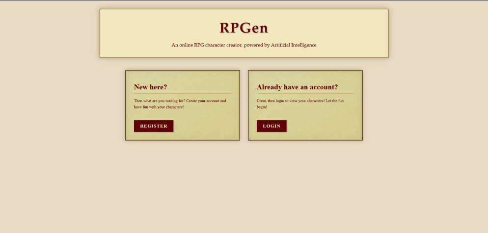
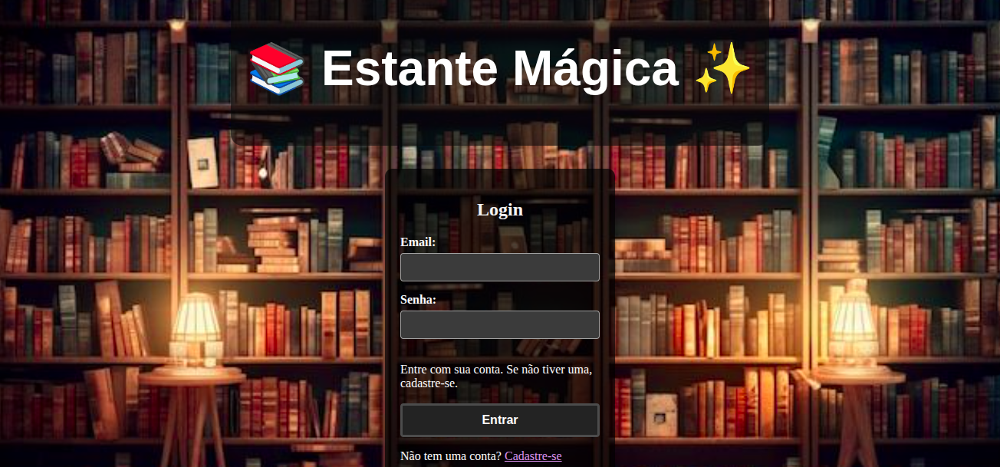
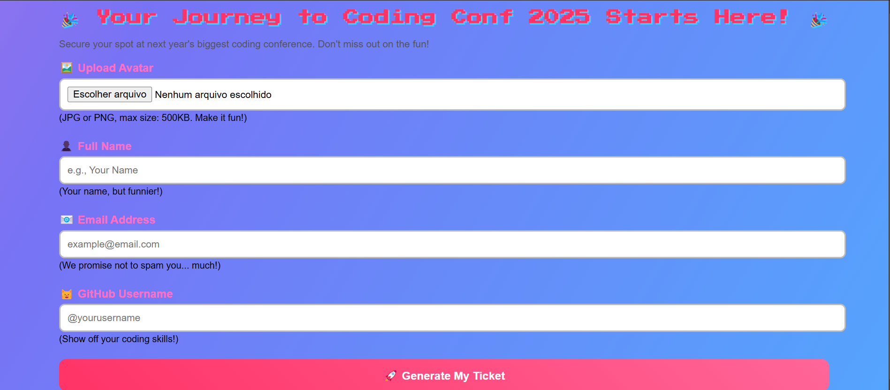

Este projeto explora o processamento de linguagem natural (PLN) voltado para o idioma coreano,
utilizando bibliotecas como KoNLPy, Pandas e Googletrans. A proposta é realizar uma análise
morfológica detalhada de textos coreanos, com foco no reconhecimento de palavras, classificação
gramatical e estrutura sintática.
🔍 Funcionalidades principais:
Carregamento e leitura do corpus da constituição sul-coreana via kolaw.
Tokenização e lematização morfológica utilizando os analisadores Kkma e Okt (Open Korean Text).
Extração de substantivos, sentenças e morfemas para estudo da estrutura linguística do idioma coreano.
Tagging de Part-of-Speech (POS): classificação das palavras de acordo com sua função sintática (substantivos, verbos, partículas, etc).
Criação de um DataFrame estruturado com os termos extraídos e suas respectivas classificações.
Aplicação de concordância textual, destacando a localização de termos específicos no corpus.
Preparação para tradução automática com integração do googletrans (em desenvolvimento).
RPGen - O Criador de Personagens de RPG que Dá Vida à Sua Imaginação! 🧙♂️✨
Como Funciona?
1️⃣ Você descreve – Raça, classe, equipamento, personalidade... Quanto mais detalhes, mais incrível fica!
2️⃣ A IA trabalha – Usando APIs poderosas do Hugging Face, o RPGen gera imagens e textos mágicos em segundos.
3️⃣ Você se torna lendário – Agora é só mostrar para o grupo e começar a aventura!
Tecnologias Mágicas Envolvidas
⚡ Hugging Face API – Para gerar imagens e textos como um verdadeiro feiticeiro digital.
📂 Sistema de upload/download – Para nunca perder seu personagem favorito.
🎨 Interface intuitiva – Feita para mestres e jogadores de todos os níveis (até os que ainda confundem d20 com d12!).

📚 Estante Mágica — Sistema de Listagem de Livros
Estante Mágica é uma aplicação web que permite aos usuários cadastrar, visualizar, editar e deletar livros de sua biblioteca pessoal. O sistema inclui autenticação (login e cadastro), tornando a experiência personalizada e segura.
✨ Funcionalidades
✅ Cadastro de novos usuários
🔐 Login com autenticação via token
📖 Adição de novos livros com informações detalhadas
✏️ Edição de livros existentes
❌ Remoção de livros
📋 Visualização de uma lista com todos os livros cadastrados
📊 Classificação por status: "Lido", "Lendo" e "Quero ler"
💬 Interface amigável e responsiva
🧱 Tecnologias Utilizadas
Frontend: React + TypeScript + Vite
Estilização: CSS Modules
Gerenciamento de Estado: React Hooks
Requisições HTTP: Axios e Fetch API
Backend (esperado): API RESTful com suporte a JWT
Autenticação: Token armazenado no localStorage

Geração automática de ticket
reparem-se para a revolução dos ingressos de conferência! Criei um gerador de tickets tão estiloso que até os seguranças vão querer um.
Preenche o formulário com seus dados (e não esqueça nada, viu? Ele é chatinho com campos vazios!), digita seu e-mail direitinho (sem "pontogif" no final, por favor!), e se sua foto de perfil for do tamanho de um outdoor ou um formato exótico, já sabe... mensagem de erro na tela! Ah, e para quem adora um bom atalho de teclado, navegue à vontade! Se tudo der certo, BAM! Seu ingresso personalizado surge como mágica, pronto para te dar acesso ao mundo do conhecimento (e uns coffee breaks, hopefully).
E claro, tudo responsivo, porque seu ingresso merece brilhar em qualquer tela!

🌸 Spring Project
Este projeto tem como objetivo desenvolver um classificador de imagens para identificar corretamente
cinco tipos distintos de flores: Girassol (Sunflower), Margarida (Daisy), Dente-de-leão (Dandelion),
Tulipa (Tulip) e Rosa (Rose). A base de dados utilizada foi obtida do Kaggle: Final Flowers Course Project Dataset.
🔍 Etapas do projeto:
Análise Exploratória de Dados (EDA)
Visualização das imagens por classe
Verificação de equilíbrio/desbalanceamento entre categorias
Identificação da escassez de amostras para certas flores
Aumento de Dados com ImageDataGenerator
Rotação
Zoom
Espelhamento horizontal
Alterações de brilho
O objetivo foi aumentar a variabilidade das imagens de treino, melhorando a capacidade de generalização do modelo.
Construção da Rede Neural Convolucional (CNN)
Convoluções 2D com filtros progressivos
MaxPooling
Dropout para regularização
Camadas Dense com função de ativação softmax para múltiplas classes
Validação Cruzada com K-Fold
Avaliar o desempenho médio do modelo em diferentes subconjuntos de dados
Reduzir o viés causado pela divisão única entre treino e validação
Avaliação do Modelo
Métricas utilizadas: Acurácia, Matriz de Confusão, Relatório de Classificação
Visualizações: curvas de perda e acurácia por época, matriz de confusão gráfica
O modelo final alcançou bons níveis de acurácia e generalização, especialmente após a aplicação de K-Fold,
mesmo em um cenário com número limitado de imagens por classe. O uso de CNNs se mostrou adequado para a tarefa,
e o aumento de dados foi essencial para o bom desempenho.
🌱 Aplicações:
Classificação automática de plantas e flores
Suporte a aplicações de botânica com IA
Demonstração prática de técnicas de visão computacional e aprendizado profundo com dados limitados